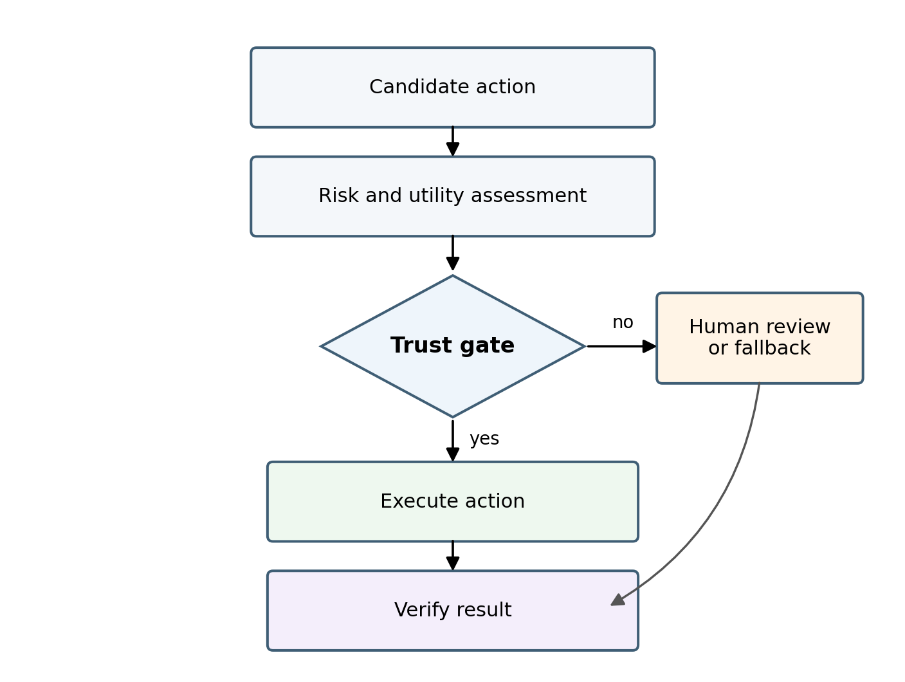
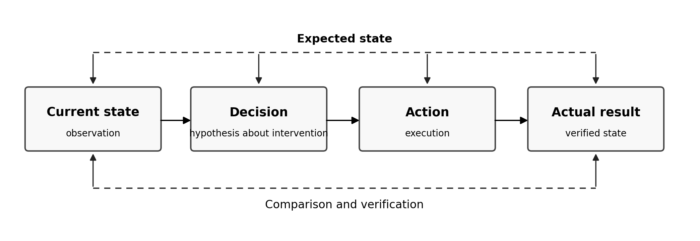
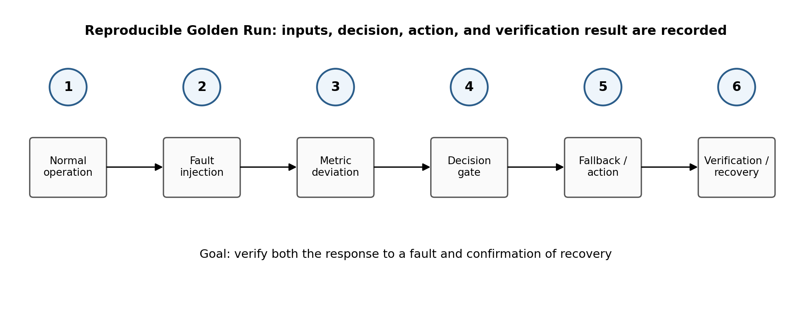

Большинство современных AI-систем оптимизируют качество ответа. Но в реальных инженерных системах этого недостаточно. Если решение влияет на состояние системы, ресурс, безопасность или следующий шаг агента, нужно проверять не только «насколько убедительно звучит ответ», но и то, что происходит после его применения.
Из этой идеи вырос SEACS — экспериментальная архитектура closed-loop reliability для AI- и agentic-систем.
От ответа к циклу управления
Обычная схема AI-приложения часто выглядит так:
Input → Model → Output
Для критических или многошаговых сценариев этого мало. Решение может быть логически правдоподобным, но привести к деградации системы, каскадной ошибке или конфликту с другим ограничением.
В расширенной архитектуре предлагается последовательность:
Observe → Analyze → Decide → Simulate → Execute → Verify
Главная идея проста: выбранное моделью решение должно пройти отдельный допуск к действию и проверку последствий. Симуляция перед действием — дополнительный этап там, где есть подходящая модель среды.
Observe: состояние важнее отдельного ответа
Первый слой — наблюдение за состоянием системы. Для реального контура нужны состояние инфраструктуры, частота ошибок, задержка, происхождение и свежесть данных. Дополнительные показатели reasoning или trust drift требуют отдельного определения и калибровки. В публичном симуляторе используются заданные синтетические состояния сервисов и инженерная оценка доверия.
Это важно, потому что один и тот же AI-ответ может быть приемлем в стабильном режиме и опасен в условиях деградации.
Например, система может показывать высокий reasoning score, но одновременно испытывать рост latency, потерю части источников и снижение достоверности контекста. Без состояния система продолжит принимать решения так, будто ничего не произошло.
Analyze: выявить не только ошибку, но и режим отказа
SEACS рассматривает отказ не как бинарное событие «работает / не работает», а как изменение режима.
В практических AI-системах встречаются:
- деградация контекста;
- stale data;
- partial tool failure;
- trust drift;
- cascade risk;
- конфликт между агентами;
- уверенный ответ при недостаточном evidence;
- fallback, который формально работает, но ухудшает качество решения.
Цель анализа — определить не только текущую ошибку, но и то, к какому классу состояния приближается система.
Decide: решение должно быть сравнимым
В agentic-среде важно не просто выбрать действие, а иметь явные альтернативы и критерии их оценки. Это позволяет сравнивать стратегии по ожидаемому влиянию на состояние системы.
Вместо «модель рекомендует X» появляется структура:
- действие A;
- действие B;
- fallback;
- ожидаемые последствия;
- ограничения;
- confidence;
- риск каскадного ухудшения.
Так решение становится объектом инженерной оценки, а не только текстовым ответом.
Simulate before execute
Это центральный принцип SEACS.
Если действие можно сначала проверить в симуляции или sandbox-контуре, система получает возможность увидеть потенциальный ущерб до применения в реальной среде.
Это особенно важно для:
- multi-agent orchestration;
- инфраструктурных изменений;
- automated remediation;
- routing между моделями и инструментами;
- decision systems с несколькими competing objectives.
Симуляция не гарантирует идеальный результат, но создаёт дополнительный защитный слой между рекомендацией модели и реальным действием.

Концептуальная схема допуска. В публичной версии human review — метка исхода, а не подключённый процесс работы оператора.
Verify after execute
Даже хороший прогноз не заменяет обратную связь. После выполнения нужно проверить, действительно ли система пришла в ожидаемое состояние.
Если после remediation error rate не снизился, trust ухудшился или появился новый cascade risk, цикл должен вернуться к анализу.
Такова цель архитектуры: обнаруживать, что выбранное действие не привело к ожидаемому результату. В публичном SEACS Lab проверяется только состояние той же модели, которая формирует исходный сбой. Независимая обратная связь от реальной системы ещё не подключена.
Почему это важно для agentic AI
Чем больше действий система выполняет без мгновенного рассмотрения человеком, тем важнее явные правила допуска, ограничения и проверка последствий.
Нужны архитектурные свойства:
- graceful degradation;
- fallback policy;
- явные thresholds;
- simulation-before-action;
- evidence-based verification;
- human escalation;
- recovery после ошибочного решения.
Это системные свойства, а не свойства отдельного LLM.
Что SEACS не пытается доказать
SEACS — исследовательская архитектура. Публичный SEACS Lab v0.1 — детерминированный симулятор; его проверка относится к синтетическим состояниям, а не к работе реальной инфраструктуры.
SEACS не является универсальной формулой надёжности и не отменяет domain-specific safety engineering. Это R&D-архитектура для исследования вопроса: как сделать AI-assisted decision loop наблюдаемым, проверяемым и способным корректировать собственные ошибки.
Ключевая ценность подхода — в переносе фокуса с «насколько умна модель» на «насколько надёжен весь цикл принятия и проверки решения».
Вывод
Надёжность agentic AI зависит и от качества модели, и от архитектуры принятия и проверки решений.
Сильная модель без обратной связи может принять плохое решение уверенно. Более слабая модель внутри хорошего closed-loop контура может оказаться безопаснее, потому что система умеет наблюдать, симулировать, проверять и отступать.

Состояние, предложение, действие и результат фиксируются отдельно. В проверенном симуляторе результат — состояние модели после допуска.
Следующий уровень AI reliability — это не только более точный inference.
Это система, которая умеет проверить последствия собственного решения.
Что проверено в SEACS Lab
Публичный симулятор на TypeScript моделирует gateway, авторизацию, базу данных и кеш. Зафиксированный набор содержит десять случаев: пять типов сценария и два seed, 42 и 101. Метрики вычисляет код; LLM не создаёт численные результаты.
| Проверка | Результат |
|---|---|
| Точное воспроизведение зафиксированных записей | 10/10 |
| Представленные исходы шлюза допуска | 5/5 |
| Core tests | 7/7 |
Это результат проверки определённого снимка исходников, а не оценка промышленной надёжности. При подготовке страницы 4 октября 2026 повторно запущен исполняемый пакет из комплекта от 30 сентября: все 10 записей совпали точно, все 7 core tests прошли. Это повторная проверка того же снимка, а не новый независимый эксперимент.

Концептуальная схема испытания. В текущем публичном контуре отказ и результат воздействия синтетические.
Пять исходов допуска
| Инженерная оценка trust | Исход | Что допускается |
|---|---|---|
| [0; 0,2) | BLOCK | Действия не применяются |
| [0,2; 0,4) | REQUIRE_HUMAN_REVIEW | Действия не применяются |
| [0,4; 0,6) | SIMULATE_ONLY | Действия не применяются |
| [0,6; 0,8) | EXECUTE_WITH_LIMITS | Первое предложенное действие |
| [0,8; 1] | EXECUTE | Предложенные действия |
Trust — ограниченная инженерная величина, а не калиброванная вероятность безопасности. Пороги относятся к иллюстративной публичной политике.
Контроллер сохраняет три состояния: before, proposed и postGate. Exact replay проверяет совпадение записей при повторном вычислении. modelCheckPassed проверяет внутреннее условие неухудшения; эти две проверки отвечают на разные вопросы.
Независимые наблюдения результата, испытания на новых сценариях, сравнение политик, hysteresis, cooldown и откат в реальной среде — следующие этапы разработки.
Данные и код
Публичный репозиторий SEACS Lab
Снимок исходников, проверенный 30 сентября 2026
Зафиксированные записи, manifest и контрольные суммы
Авторская веб-версия на основе статьи от 27 сентября и уточнений проверочного комплекта от 30 сентября 2026. Обложка — художественная иллюстрация; схемы — концептуальные.